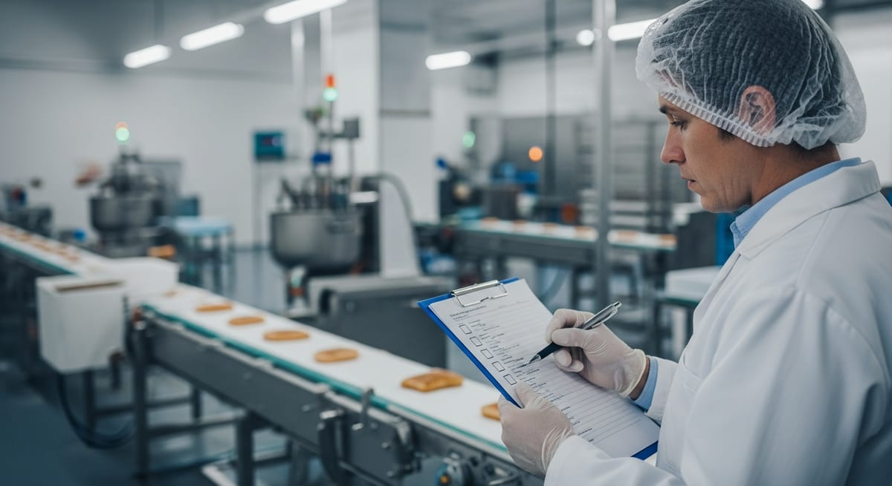

Análisis de peligros APPCC: tipos y cómo evaluarlos

Análisis de peligros que evita sustos
En el día a día de cualquier planta de producción alimentaria, el análisis de peligros es la herramienta que marca la diferencia entre reaccionar ante un problema y anticiparlo. Sin este ejercicio previo y sistemático, el equipo de calidad trabaja a ciegas: detecta desviaciones cuando ya han ocurrido, gestiona retiradas de producto bajo presión y, en el peor de los casos, compromete la seguridad del consumidor. Si buscas estructurar mejor tu sistema preventivo, este artículo te da las claves para entender qué implica un análisis de peligros riguroso, cómo clasificar y evaluar cada riesgo, y cómo Solved te ayuda a documentarlo sin perder tiempo.
Qué es el análisis de peligros en el APPCC
El APPCC (Análisis de Peligros y Puntos de Control Crítico) es el sistema de gestión de inocuidad alimentaria más extendido en la industria. Su pilar central es precisamente el análisis de peligros: un proceso estructurado en el que el equipo de calidad identifica todos los agentes que podrían causar un daño al consumidor, evalúa la probabilidad de que aparezcan y la gravedad de sus consecuencias, y decide qué medidas de control son necesarias para eliminarlos o reducirlos a niveles aceptables.
Este análisis no es un trámite burocrático: es el fundamento sobre el que se construyen los puntos de control crítico (PCC), los límites críticos, los procedimientos de vigilancia y los planes de acción correctiva. Sin un análisis de peligros sólido, todo lo que venga después tiene pies de barro. Tal y como establece el Reglamento (CE) 852/2004 relativo a la higiene de los productos alimenticios (Reglamento [CE] 852/2004, 2004), los operadores de empresas alimentarias están obligados a crear, aplicar y mantener procedimientos permanentes basados en los principios del APPCC, lo que sitúa el análisis de peligros en el corazón del cumplimiento legal europeo.
En la industria alimentaria, los retos son múltiples: materias primas de distinta procedencia, cadenas de frío exigentes, alérgenos, procesos de transformación complejos y una normativa en constante evolución. El análisis de peligros y puntos críticos no es algo que se hace una vez y se archiva; debe revisarse cada vez que cambia un ingrediente, un proveedor, un proceso o una instalación.
Peligros biológicos, químicos y físicos
El primer paso del análisis de peligros es identificar qué tipo de agentes pueden comprometer la inocuidad del producto. La clasificación clásica, reconocida internacionalmente, distingue tres grandes categorías:
Peligros biológicos. Son los más frecuentes y, a menudo, los de mayor impacto en salud pública. Incluyen bacterias patógenas como Salmonella, Listeria monocytogenes, Escherichia coli O157:H7 o Campylobacter, además de virus, parásitos y hongos toxigénicos. Su presencia depende de la higiene de las materias primas, las condiciones de temperatura y tiempo durante el procesado y el almacenamiento, y las prácticas de manipulación.
Peligros químicos. Abarcan un espectro amplio: residuos de plaguicidas, metales pesados, micotoxinas, alérgenos no declarados, aditivos fuera de límite legal, productos de limpieza y desinfección, lubricantes o contaminantes de migración del envase. La evaluación de riesgos alimentarios en esta categoría requiere conocer tanto las fuentes de contaminación como los umbrales toxicológicos relevantes.
Peligros físicos. Fragmentos de vidrio, metal, madera, plástico duro o hueso que pueden llegar al producto a través de las materias primas, la maquinaria o el entorno de producción. Aunque su impacto en salud suele ser localizado (cortes, roturas dentales), generan retiradas de mercado y daño reputacional considerables.
Una identificación exhaustiva exige revisar cada etapa del diagrama de flujo del proceso: recepción de materias primas, almacenamiento, preparación, transformación, envasado, almacén de producto terminado y distribución. Además, es importante no olvidar los peligros de contaminación cruzada, especialmente los relacionados con alérgenos.
Cómo evaluar probabilidad y gravedad
Identificar los peligros alimentarios es solo la mitad del trabajo. La otra mitad consiste en priorizar: no todos los peligros tienen el mismo nivel de riesgo real, y los recursos de control deben concentrarse donde el impacto potencial es mayor. Para ello se utiliza la evaluación del riesgo, que combina dos variables:
Probabilidad (o frecuencia). ¿Con qué frecuencia podría aparecer este peligro en condiciones normales de operación? Para estimarla se tienen en cuenta datos históricos de la empresa, incidencias del sector, registros de proveedores, resultados analíticos previos y criterios técnicos del equipo APPCC.
Gravedad (o severidad). ¿Qué consecuencias tendría para el consumidor si el peligro llegase al producto final sin control? Se valora el daño potencial: desde molestias leves hasta enfermedades graves o muerte, pasando por efectos en poblaciones vulnerables (embarazadas, ancianos, inmunodeprimidos).
La combinación de ambas variables se plasma habitualmente en una matriz de riesgo donde se cruzan los niveles de probabilidad y gravedad. Los peligros con puntuación alta en ambas dimensiones deben controlarse mediante PCC o, al menos, mediante programas de prerrequisitos reforzados. Los de puntuación baja pueden gestionarse con buenas prácticas de higiene estándar.
Este enfoque basado en evidencia es el que recomienda el Codex Alimentarius de FAO/OMS (Codex Alimentarius, s.f.) como marco metodológico de referencia internacional para la gestión de inocuidad. Aplicarlo de forma coherente, con registros que demuestren el razonamiento del equipo, es clave tanto para la auditoría interna como para las inspecciones oficiales.
Un aspecto que los responsables de calidad suelen subestimar es la importancia de la trazabilidad en esta fase: conocer exactamente de dónde proviene cada ingrediente, en qué lote se utilizó y a qué destino fue el producto terminado permite acotar el alcance de un problema si el análisis de peligros detecta una desviación potencial a posteriori.
Cómo documentar el análisis y sus controles en Solved
Uno de los grandes retos del análisis de peligros no es metodológico, sino operativo: mantener la documentación actualizada, accesible y útil en el contexto de auditorías y revisiones periódicas. Los equipos que trabajan con hojas de cálculo dispersas o documentos en papel saben bien lo que cuesta reconstruir el razonamiento de una decisión tomada hace dos años o rastrear si un peligro fue reevaluado tras un cambio de proveedor.
Solved está diseñado específicamente para la industria agroalimentaria y resuelve este problema de raíz. En la plataforma puedes estructurar tu análisis APPCC de forma digital, centralizando en un único entorno la identificación de peligros por etapa del proceso, la matriz de evaluación de probabilidad y gravedad, la decisión sobre si el peligro da lugar a un PCC o a una medida de control alternativa, y los registros de vigilancia y acciones correctivas asociadas.
Cada elemento del análisis queda trazado: quién lo introdujo, cuándo fue revisado y qué cambios se realizaron. Esto no solo facilita la preparación de auditorías frente a estándares como BRC, IFS o FSSC 22000, sino que permite al equipo de calidad detectar en tiempo real si alguna medida de control presenta desviaciones frecuentes que deberían llevar a replantear la evaluación de riesgo original.
Además, Solved conecta el análisis de peligros con el resto del sistema de gestión de calidad: fichas de producto, proveedores, planes de muestreo, incidencias y no conformidades. Cuando surge un problema en producción, el responsable de calidad puede cruzar la incidencia con el análisis de peligros vigente y determinar en minutos si existía un control previsto, si se estaba aplicando correctamente y si es necesario actualizar la evaluación de riesgos.
El resultado es un sistema vivo, no un documento archivado: un análisis de peligros que realmente sirve para evitar sustos, en lugar de documentar los que ya han ocurrido. Si quieres ver cómo funciona en la práctica para una empresa como la tuya, ponte en contacto con el equipo de Solved y solicita una demostración adaptada a tu sector.
Referencias
- Codex Alimentarius. (s.f.). Codex Alimentarius (FAO/OMS). https://www.fao.org/fao-who-codexalimentarius/
- Reglamento (CE) n.o 852/2004 del Parlamento Europeo y del Consejo, de 29 de abril de 2004, relativo a la higiene de los productos alimenticios. (2004). https://eur-lex.europa.eu/eli/reg/2004/852/oj?locale=es